청소년상담사-3급(1교시) (2020-10-10 기출문제)
1과목: 발달심리
1. 발달에 관한 설명으로 옳은 것을 모두 고른 것은?
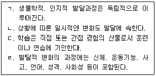
- ㄱ, ㄹ
- ㄴ, ㄷ
- ㄷ, ㄹ
- ㄱ, ㄴ, ㄷ
- ㄴ, ㄷ, ㄹ
(정답률: 62%)

2. 질적연구방법에 관한 설명으로 옳지 않은 것은?
- 심리적 현상을 계량화하고 인과관계를 검증한다.
- 근거이론연구, 사례연구, 담화분석, 행동연구가 해당된다.
- 인간 경험의 심미적 차원을 해석한다.
- 외부감사자에 의해 연구의 정밀성을 검토한다.
- 연구자들은 자신의 해석을 뒷받침하기 위해 삼각측정기법을 사용한다.
(정답률: 56%)
3. 발달연구의 자료수집 방법에 관한 설명으로 옳지 않은 것은?
- 질문지법은 질문지를 통해 자료를 수집한다.
- 구조화된 면접은 모든 대상자에게 동일한 질문을 동일한 순서대로 물어본다.
- 사례연구는 소수를 대상으로 관찰이나 면접을 통해 자료를 수집한다.
- 에믹(emic)접근법은 다른 문화권에서도 일반화할 수 있는 행동을 묘사한다.
- 자연관찰법은 어떠한 개입없이 일상적인 환경에서 참여자의 행동을 기록한다.
(정답률: 59%)
4. 다음 설명이 모두 해당되는 브론펜브레너(U. Bronfenbrenner)의 생태학적 체계는?
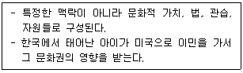
- 외체계
- 거시체계
- 중간체계
- 미시체계
- 시간체계
(정답률: 57%)
5. 발달이론가와 성인발달에 관한 주장의 연결이 옳은 것은?
- 헤이플릭(L. Hayflick) - 인생주기는 네 개의 시기로 구분된다.
- 레빈슨(D. Levinson) - 세포의 수명은 유전적 프로그램에 한정되어 있다.
- 해비거스트(R. Havighurst) - 성공적 노화는 선택, 최적화, 보상의 요인과 연결되어 있다.
- 레빙거(J. Loevinger) - 전생애 동안 개인의 자아는 단계적으로 발달하고 발달이 진행될수록 개인은 더 성숙한 자아발달 상태를 지향한다.
- 발테스와 발테스(P. Baltes & M. Baltes) - 능동적이고 적극적인 생활양식이 성인후기의 안녕감과 만족도를 높인다.
(정답률: 37%)
6. 다음 설명이 모두 해당되는 검사는?
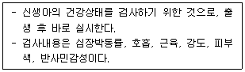
- 덴버(Denver) 발달선별검사
- 베일리(Bayley) 영아발달검사
- 게젤(Gesell) 발달검사
- 아프가(Apgar) 척도
- 카텔(Cattell) 영아척도
(정답률: 42%)
7. 뇌에 관한 설명으로 옳은 것을 모두 고른 것은?
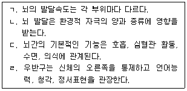
- ㄱ, ㄴ
- ㄷ, ㄹ
- ㄱ, ㄴ, ㄷ
- ㄴ, ㄷ, ㄹ
- ㄱ, ㄴ, ㄷ, ㄹ
(정답률: 60%)
8. 피아제(J. Piaget)가 제시한 구체적 조작기 사고의 주요 특징으로 옳지 않은 것은?
- 상위유목과 하위유목 간의 관계를 이해한다.
- 타인의 입장, 감정, 인지 등을 추론하고 이해한다.
- 미래의 가능성에 대해 이상적으로 공상한다.
- 문제해결 과정에서 직관보다는 논리적 조작이나 규칙을 적용한다.
- 두 가지 이상의 속성에 따라 대상을 비교해서 순서대로 배열이 가능하다.
(정답률: 56%)
9. 다음 설명이 모두 해당되는 콜버그(L. Kohlberg)의 도덕성발달 단계는?
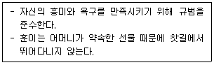
- 사회 계약 지향
- 착한 아이 지향
- 법과 질서 지향
- 벌과 복종 지향
- 도구적 목표 지향
(정답률: 63%)
10. 방어기제와 그에 관한 설명으로 옳은 것은?
- 합리화 - 용납하기 어려운 충동이 무의식적으로 억제되어 반대로 나타난다.
- 반동형성 - 충격적인 사건이나 용납할 수 없는 충동을 무의식적으로 거부한다.
- 억압 - 종교나 철학 등의 지적 활동에 몰입함으로써 성적 욕망에서 벗어나고자 한다.
- 동일시 - 다른 사람의 태도, 신념, 가치 등을 자신의 것으로 채택함으로써 다른 사람의 특성을 자신의 성격에 흡수한다.
- 투사 - 성적 본능이 신경증적인 행동으로 전이되지 않고 오히려 사회적으로 바람직한 행동으로 나타난다.
(정답률: 67%)
11. 다음 각 사례에 해당하는 청소년기의 자아정체감 유형이 바르게 나열된 것은?
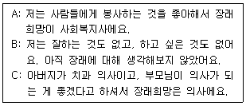
- A: 정체감 성취, B: 정체감 유실, C: 정체감 혼미
- A: 정체감 성취, B: 정체감 혼미, C: 정체감 유실
- A: 정체감 성취, B: 정체감 혼미, C: 정체감 유예
- A: 정체감 유예, B: 정체감 유실, C: 정체감 혼미
- A: 정체감 유예, B: 정체감 혼미, C: 정체감 유실
(정답률: 57%)
12. 샤이(K. Schaie)가 제시한 성인기 인지발달 단계로 옳은 것은?
- 획득 → 성취 → 책임(실행) → 재통합
- 획득 → 책임(실행) → 재통합 → 성취
- 획득 → 책임(실행) → 성취 → 재통합
- 성취 → 획득 → 재통합 → 책임(실행)
- 성취 → 재통합 → 책임(실행) → 획득
(정답률: 28%)
13. 퀴블러-로스(E. Kübler-Ross)가 제시한 죽음에 적응하는 심리적 변화의 순서로 옳은 것은?
- 부정 → 분노 → 타협 → 우울 → 수용
- 분노 → 부정 → 우울 → 수용 → 타협
- 부정 → 우울 → 분노 → 수용 → 타협
- 분노 → 부정 → 타협 → 우울 → 수용
- 부정 → 타협 → 분노 → 우울 → 수용
(정답률: 54%)
14. 태내발달에 관한 설명으로 옳지 않은 것은?
- 중배엽은 근육, 골격, 순환계가 된다.
- 태내발달은 착상 순간부터 시작된다.
- 태내발달은 배종기, 배아기, 태아기로 나뉜다.
- 라누고(lanugo)는 태아의 신체를 덮고 있는 가는 털을 말한다.
- 기형발생물질이 태내발달에 영향을 미치는 민감한 시기가 있다.
(정답률: 46%)
15. 유전 발달에 관한 설명으로 옳은 것은?
- 접합체의 발달은 감수분열을 통해 발생한다.
- 다운증후군은 성염색체 장애이다.
- 생식세포는 22개의 상염색체와 1개의 성염색체를 갖고 있다.
- 정상적인 인간 접합체는 48개의 염색체를 갖고 있다.
- 클라인펠터(Klinefelter) 증후군은 여아에게 발생한다.
(정답률: 38%)
16. 신경계에 관한 설명으로 옳은 것을 모두 고른 것은?
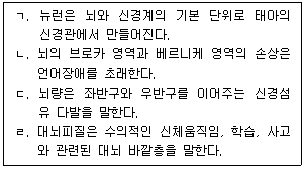
- ㄱ, ㄴ, ㄷ
- ㄱ, ㄴ, ㄹ
- ㄱ, ㄷ, ㄹ
- ㄴ, ㄷ, ㄹ
- ㄱ, ㄴ, ㄷ, ㄹ
(정답률: 53%)
17. 신체 및 운동발달에 관한 설명으로 옳은 것을 모두 고른 것은?
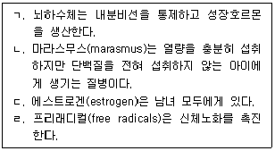
- ㄱ, ㄴ
- ㄴ, ㄷ
- ㄷ, ㄹ
- ㄱ, ㄴ, ㄹ
- ㄱ, ㄷ, ㄹ
(정답률: 52%)
18. 다음 설명이 모두 해당되는 이론으로 옳은 것은?
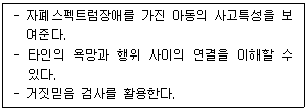
- 사회인지이론
- 대인관계이론
- 인지발달이론
- 마음이론
- 성역할발달이론
(정답률: 53%)
19. 다음 사례에서 활용되지 않은 것은?
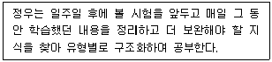
- 비계설정
- 실행기능
- 작업기억
- 선택적 주의
- 장기기억
(정답률: 56%)
20. 아동의 사회성 발달에 관한 설명으로 옳지 않은 것은?
- 주양육자의 비일관적 양육행동은 불안정애착을 야기할 수 있다.
- 프로이트(S. Freud)에 의하면 초자아 발달은 구강기에 형성된다.
- 닷즈(K. Dodge)에 의하면 공격적 아동은 적대적 귀인편향을 보인다.
- 아이젠버그(N. Eisenberg)에 의하면 아동의 공감능력은 친사회성 발달을 촉진한다.
- 반두라(A. Bandura)의 보보인형 실험은 아동의 공격성이 모방될 수 있음을 보여준다.
(정답률: 62%)
21. 성인기 발달에 관한 설명으로 옳은 것을 모두 고른 것은?
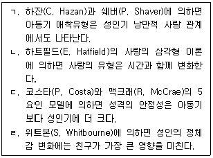
- ㄱ, ㄴ
- ㄱ, ㄷ
- ㄱ, ㄹ
- ㄴ, ㄷ
- ㄴ, ㄹ
(정답률: 35%)
22. 도덕성 발달에 관한 설명으로 옳은 것은?
- 피아제(J. Piaget)에 의하면 타율적 도덕성은 구체적 조작기에서 처음 나타난다.
- 길포드(J. Guilford)에 의하면 여성의 도덕성은 배려와 관련된다.
- 콜버그(L. Kohlberg)에 의하면 도덕적 추론은 비연속적이다.
- 피아제(J. Piaget)에 의하면 아동의 도덕적 추론은 사회적 상호작용의 영향을 받지 않는다.
- 반두라(A. Bandura)에 의하면 도덕적 행동은 관찰학습과 관련이 없다.
(정답률: 31%)
23. 다음 사례에서 나타난 발달양상은?
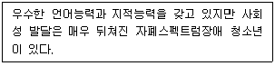
- 발달전이
- 역할갈등
- 적응실패
- 비동시성
- 퇴행
(정답률: 56%)
24. 발달정신병리를 설명하는 이론적 모델과 주요 개념의 연결이 옳지 않은 것은?
- 사회인지 모델 - 부적절한 정보처리
- 사회학적 모델 - 아노미 상태
- 의학적 모델 - 기질적 역기능
- 가족체계 모델 - 경계의 붕괴
- 정신역동 모델 - 과잉행동 보상
(정답률: 50%)
25. DSM-5의 탈억제성 사회적 유대감 장애 진단을 받은 아동에 관한 설명으로 옳지 않은 것은?
- 타인에 대한 최소한의 사회적ㆍ감정적 반응성을 보인다.
- 진단 시점까지 장애가 12개월 이상 지속되었다.
- 심각한 사회적 방임이나 불충분한 양육을 경험했다.
- 아동의 연령은 최소 9개월 이상이다.
- 양육환경이 바뀌어도 증상이 잘 개선되지 않을 것이다.
(정답률: 30%)
2과목: 집단상담의 기초
26. 집단상담의 장점으로 옳은 것을 모두 고른 것은?
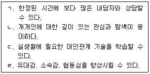
- ㄱ, ㄹ
- ㄷ, ㄹ
- ㄱ, ㄴ, ㄷ
- ㄱ, ㄷ, ㄹ
- ㄴ, ㄷ, ㄹ
(정답률: 59%)
27. 구조화 집단상담 계획에 관한 설명으로 옳지 않은 것은?
- 집단상담 회기, 시간, 장소를 사전에 계획한다.
- 집단원의 선별 절차에 대한 계획을 사전에 수립한다.
- 집단평가 시기, 방법, 내용을 사전에 계획한다.
- 집단원 모집을 위한 홍보계획을 사전에 수립한다.
- 회기별 세부적인 활동은 해당 회기 직전에 계획한다.
(정답률: 61%)
28. 다음에 해당하는 집단의 유형은?
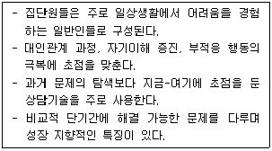
- 상담집단
- 치료집단
- 과업집단
- 자조집단
- 교육집단
(정답률: 39%)
29. 집단상담의 윤리에 관한 설명으로 옳지 않은 것을 모두 고른 것은?
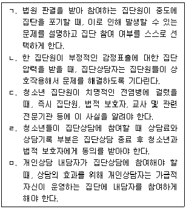
- ㄱ, ㄷ
- ㄹ, ㅁ
- ㄱ, ㄴ, ㅁ
- ㄱ, ㄹ, ㅁ
- ㄴ, ㄹ, ㅁ
(정답률: 42%)
30. 집단상담의 이론적 접근과 기법의 연결로 옳지 않은 것은?
- 현실치료 - 유머, 직면
- 정신분석 - 꿈 분석, 해석
- 게슈탈트 - 자각, 빈 의자 기법
- 해결중심 - 기적 질문, 탈숙고 기법
- 아들러 - 생활양식 분석, 역설적 의도
(정답률: 36%)
31. 심리극 접근의 집단상담에 관한 설명으로 옳지 않은 것은?
- 역할연기를 통해 자신, 타인 및 상황에 대한 이해를 증진한다.
- 과거 발생한 일도 지금-여기에서 일어나는 것처럼 실연된다.
- 주요 5대 구성요소로 주인공, 보조자아, 연출가, 각본, 무대가 있다.
- 실연단계에서 내면적 정서들이 표현되면서 주인공은 억압된 감정을 의식하게 된다.
- 언어적ㆍ비언어적 수단을 통해 즉흥적으로 주인공의 상황이 표현된다.
(정답률: 47%)
32. 다음에서 공통적으로 설명하고 있는 집단상담의 이론적 접근은?
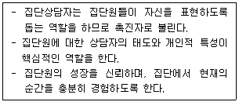
- 인간중심 집단상담
- 교류분석 집단상담
- 행동주의 집단상담
- 실존주의 집단상담
- 인지주의 집단상담
(정답률: 52%)
33. 다음에서 집단상담자가 적용한 상담기술을 ＜보기＞에서 모두 고른 것은?
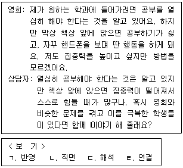
- ㄱ, ㄷ
- ㄱ, ㄹ
- ㄴ, ㄹ
- ㄱ, ㄴ, ㄹ
- ㄱ, ㄷ, ㄹ
(정답률: 48%)
34. 소극적으로 참여하는 집단원에 관한 집단상담자의 개입 방안으로 옳지 않은 것은?
- 소극적인 참여 원인에 관한 집단원의 자각을 촉진한다.
- 다른 집단원이 소극적인 집단원을 공격하지 않도록 개입한다.
- 집단상담자에 대한 저항의 표시인지 탐색해 본다.
- 생산적인 침묵 시 기다리지 않고 즉시 개입하는 것이 효과적이다.
- 집단상담 초기 침묵 시 집단상담자가 표현하는 것을 보여주어 참여를 유도한다.
(정답률: 57%)
35. 주지화 행동을 보이는 집단원에 관한 집단상담자의 대처방안으로 옳은 것을 모두 고른 것은?
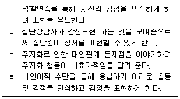
- ㄱ, ㄷ
- ㄴ, ㄹ
- ㄱ, ㄴ, ㄹ
- ㄴ, ㄷ, ㄹ
- ㄱ, ㄴ, ㄷ, ㄹ
(정답률: 32%)
36. 다음 집단원에 대한 상담자의 개입에 관한 설명으로 옳지 않은 것은?
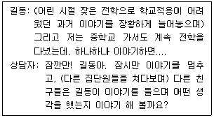
- 집단원들에게 참여기회를 제공하여 상호작용을 촉진시키고 있다.
- 해석 기법을 통해 집단원 행동의 원인과 목적을 통찰하도록 돕고 있다.
- 과거 사건에 대한 이야기가 현재 집단에 미치는 영향을 탐색하도록 돕고 있다.
- 연결 기법을 통해 집단원들이 지금-여기에서의 상호작용에 집중하도록 돕고 있다.
- 차단 기법을 통해 대화의 독점이 일어나지 않도록 문제행동에 대처하고 있다.
(정답률: 50%)
37. 공동리더십 한계의 극복방안으로 옳지 않은 것은?
- 집단계획과 목표를 분담하여 수립한다.
- 집단 예비모임에 함께 참석한다.
- 서로의 개인적 특성을 파악할 시간을 갖는다.
- 회기 후 집단원 반응에 대해 서로 의견을 교환한다.
- 회기 전 집단에 대한 기대를 함께 나눈다.
(정답률: 53%)
38. 집단상담자의 상담기법과 예시의 연결로 옳은 것은?
- 구조화 - “선생님이 노력한 것을 알아주지 않아 서운했겠네요.”
- 해석 - “집단을 마치기 전에 오늘 여러분들이 경험한 것에 대해 잠시 이야기 나눠보죠.”
- 개방적 질문 - “오늘 아침 식사를 하고 왔나요?”
- 보편화 - “방금 언급한 부정적인 감정이 구체적으로 무엇을 의미하는 것이죠?”
- 직면 - “긴장되지 않는다고 이야기하면서 다리를 계속 떨고 있는데 알고 있나요?”
(정답률: 61%)
39. 집단역동의 요소인 내용적 측면과 과정적 측면에 관한 설명으로 옳지 않은 것은?
- 내용적 측면은 집단원들이 무엇에 관하여 이야기하고 있는지에 관심을 둔다.
- 과정적 측면은 집단원이 어떻게, 왜 그런 말을 했는지에 대해 관심을 둔다.
- 내용적 측면은 언어로 표현된 것보다 이면에 있는 무의식적인 동기나 의도를 더 중시하는 것이다.
- 과정적 측면을 이해하기 위해 시선, 동작, 태도에도 주의를 기울여야 한다.
- 내용적 측면과 과정적 측면 중 어느 한쪽으로 치우쳐서는 안 된다.
(정답률: 49%)
40. 다음에서 설명하는 집단상담의 치료적 요인은?
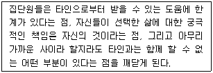
- 정화
- 실존적 요인
- 자기이해
- 보편성
- 이타주의
(정답률: 46%)
41. 응집력이 높은 집단의 특징을 모두 고른 것은?
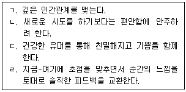
- ㄱ, ㄴ
- ㄴ, ㄷ
- ㄱ, ㄷ, ㄹ
- ㄴ, ㄷ, ㄹ
- ㄱ, ㄴ, ㄷ, ㄹ
(정답률: 54%)
42. 집단 발달단계의 특징을 순서대로 옳게 나열한 것은?
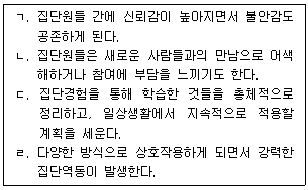
- ㄱ → ㄴ → ㄷ → ㄹ
- ㄱ → ㄴ → ㄹ → ㄷ
- ㄱ → ㄹ → ㄴ → ㄷ
- ㄴ → ㄱ → ㄷ → ㄹ
- ㄴ → ㄱ → ㄹ → ㄷ
(정답률: 57%)
43. 다음 집단상담자 역할이 공통으로 요구되는 집단 발달단계는?
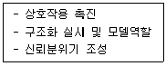
- 준비단계
- 초기단계
- 과도기단계
- 생산단계
- 종결단계
(정답률: 55%)
44. 집단역동에 영향을 미치는 요소를 모두 고른 것은?
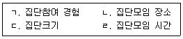
- ㄴ, ㄷ
- ㄱ, ㄴ, ㄹ
- ㄱ, ㄷ, ㄹ
- ㄴ, ㄷ, ㄹ
- ㄱ, ㄴ, ㄷ, ㄹ
(정답률: 55%)
45. 청소년 집단상담 회기 종결 시에 주로 이루어지는 상담자의 반응을 모두 고른 것은?
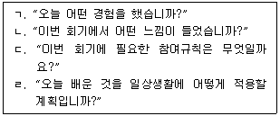
- ㄱ
- ㄴ, ㄷ
- ㄱ, ㄴ, ㄷ
- ㄱ, ㄴ, ㄹ
- ㄱ, ㄴ, ㄷ, ㄹ
(정답률: 58%)
46. 청소년 집단상담에 관한 설명으로 옳은 것은?
- 비자발적인 집단원이 집단참여에 대한 불편한 감정을 표현할 수 있도록 돕는다.
- 정신병리 징후를 가진 학생을 집단상담에 참여하도록 권유한다.
- 개방집단은 상담진행에서 높은 안정성과 일관성을 유지할 수 있다.
- 동질집단에 비해 이질집단은 속마음을 쉽게 공개하고 공감할 수 있다.
- 게임이나 매체를 활용하는 활동은 하지 않는다.
(정답률: 57%)
47. 청소년 집단상담의 계획, 실시, 평가에 관한 설명으로 옳지 않은 것은?
- 집단의 형태, 회기, 인원, 선발방법 등을 계획한다.
- 부모나 법적보호자의 서면동의를 받은 후에 집단상담 계획을 수립한다.
- 사전 오리엔테이션으로 집단상담에 대한 기본적인 이해를 돕는다.
- 집단원 선정 시 집단원들의 동질성과 이질성을 고려한다.
- 집단상담 성과평가를 위해 사전 및 사후 검사를 실시한다.
(정답률: 50%)
48. 청소년 집단상담에서 비밀유지에 관한 집단상담자의 역할로 옳지 않은 것은?
- 비밀유지 한계를 알려주어 집단에서 자기개방을 어느 정도 할지 집단원 스스로 결정하도록 한다.
- 동일한 학급에 소속된 집단원들의 경우 비밀유지의 문제를 더 중요하게 다룰 필요가 있다.
- 부모나 법적보호자의 참여 동의서 작성 시 비밀유지에 관한 내용은 고지하지 않아도 된다.
- 집단회기 중의 녹음, 녹화에 대해 반드시 사용 목적을 알린 후 서면 동의를 받아야 한다.
- 법적으로 집단원에 대한 정보 공개가 요구되는 경우는 비밀유지 예외상황이다.
(정답률: 57%)
49. 다문화 가정 청소년 집단상담을 실시할 때 상담자의 태도로 옳지 않은 것은?
- 문화적 특성이 고려된 다양한 개입방법을 사용한다.
- 집단원들의 문화적 가치와 경험들을 존중한다.
- 집단원에게 상담자의 문화적 가치를 강요하지 않는다.
- 집단원의 문화적 배경에 대해 학습한다.
- 집단원 행동을 다수 집단원의 문화적 관점에서 이해한다.
(정답률: 51%)
50. 다음 청소년 집단상담 장면에서 상담자가 공통으로 사용한 기술은?
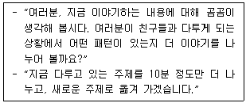
- 피드백하기
- 차단하기
- 연결하기
- 초점 맞추기
- 해석하기
(정답률: 48%)
3과목: 심리측정 및 평가
51. 심리검사 제작자에게 요구되는 역량으로 옳지 않은 것은?
- 검사목표, 내용, 과정을 이해하여야 한다.
- 수검자 집단의 특성을 파악하여야 한다.
- 검사이론을 숙지하고 있어야 한다.
- 추상적이고 복잡한 글을 쓸 수 있는 문장력을 갖추어야 한다.
- 성별, 인종, 학력 등에 대한 편견이 없어야 한다.
(정답률: 54%)
52. 심리측정과 검사에 관한 설명으로 옳지 않은 것은?
- 추상적인 구성개념을 직접적으로 측정하는 과정이다.
- 심리측정은 신뢰성 높은 측정도구가 요구된다.
- 심리검사는 개인 간 또는 개인 내 비교를 가능하게 한다.
- 심리검사는 행동의 표본을 표준화된 방법으로 측정한다.
- 표준화검사는 시행과 채점이 일정한 방식으로 진행된다.
(정답률: 37%)
53. 심리검사와 개발자의 연결이 옳은 것은?
- Army-β: 해서웨이(S. Hathaway)
- Stanford-Binet: 머레이(H. Murray)
- PMA: 써스톤(L. Thurstone)
- 16PF: 엑스너(J. Exner)
- Strong-Campbell: 벡(A. Beck)
(정답률: 23%)
54. 자연스런 환경에 참여하고 있는 관찰자가 개인을 관찰하는 측정법은?
- 유사관찰법
- 일화관찰법
- 참여관찰법
- 자기관찰법
- 실험관찰법
(정답률: 50%)
55. 타당도에 관한 설명으로 옳은 것은?
- 안면타당도는 다른 점수와의 관계를 분석하여 추정한다.
- 공인타당도는 검사점수와 예측행동자료를 일정시간에 거쳐 수집해서 알아본다.
- 내용타당도는 관련분야 전문가의 평가를 통해 판단된다.
- 구성타당도는 크론바흐 알파계수(α)를 사용하여 측정한다.
- 내용타당도는 숙련도검사보다 성격검사나 적성검사에서 더 중요하다.
(정답률: 39%)
56. 신뢰도에 관한 설명으로 옳지 않은 것은?
- 검사-재검사 신뢰도는 실시 간격의 영향을 받지 않는다.
- 평정자 간 신뢰도는 두 명 이상의 평가자가 필요하다.
- 평정자 간 점수 차이는 신뢰도에 영향을 준다.
- 문항들의 내용이 동질적일수록 신뢰도는 높아진다.
- 검사 문항수가 증가하면 반분신뢰도는 높아진다.
(정답률: 50%)
57. 척도에 관한 설명으로 옳지 않은 것을 모두 고른 것은?
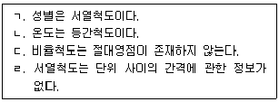
- ㄱ, ㄴ
- ㄱ, ㄷ
- ㄴ, ㄷ
- ㄴ, ㄹ
- ㄷ, ㄹ
(정답률: 34%)
58. 심리측정에 관한 설명으로 옳은 것은?
- '대학 학점은 대학수학능력시험 점수와 관련된다'는 가설은 실험가설의 대표적인 예이다.
- 실험가설은 선행조건의 조작과 결과적 행동의 측정을 위한 것이다.
- 종속변인은 실험가설을 증명하기 위해 실험자가 의도적으로 조작하는 변수이다.
- 등간척도는 가장 높은 수준의 척도이다.
- 표준점수는 원점수와 동일하다.
(정답률: 39%)
59. 심리평가 시행 단계의 순서로 옳은 것은?
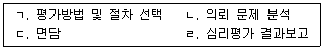
- ㄱ - ㄴ - ㄹ - ㄷ
- ㄴ - ㄱ - ㄷ - ㄹ
- ㄴ - ㄱ - ㄹ - ㄷ
- ㄴ - ㄷ - ㄱ - ㄹ
- ㄷ - ㄱ - ㄴ - ㄹ
(정답률: 28%)
60. 심리검사 제작 절차의 순서로 옳은 것은?
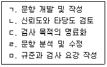
- ㄱ - ㄷ - ㄴ - ㄹ - ㅁ
- ㄱ - ㄷ - ㄹ - ㅁ - ㄴ
- ㄴ - ㄷ - ㄱ - ㅁ - ㄹ
- ㄷ - ㄱ - ㄹ - ㄴ - ㅁ
- ㄷ - ㄴ - ㄱ - ㅁ - ㄹ
(정답률: 44%)
61. 심리검사에 관한 설명으로 옳은 것을 모두 고른 것은?
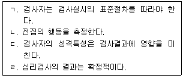
- ㄱ, ㄴ
- ㄱ, ㄷ
- ㄴ, ㄷ
- ㄴ, ㄹ
- ㄷ, ㄹ
(정답률: 37%)
62. 투사검사의 장점을 모두 고른 것은?
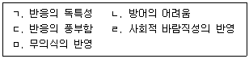
- ㄱ, ㅁ
- ㄴ, ㄷ, ㄹ
- ㄴ, ㄹ, ㅁ
- ㄱ, ㄴ, ㄷ, ㄹ
- ㄱ, ㄴ, ㄷ, ㅁ
(정답률: 56%)
63. 심리검사 및 평가의 윤리에 관한 설명으로 옳지 않은 것은?
- 수검자가 자해 위험이 있는 경우 비밀보장의 원칙을 지키지 않아도 된다.
- 평가결과의 해석은 내담자가 그 내용을 이해할 수 있어야 한다.
- 평가서를 보여 주면 안 되는 경우, 사전에 수검자에게 이 사실을 인지시켜야 한다.
- 가장 적은 시간과 노력을 들여 가장 타당하게 평가할 수 있는 검사를 선택한다.
- 평가 의뢰인과 수검자가 동일하지 않을 경우에, 평가서와 검사보고서는 의뢰인의 동의 없이 수검자에게 열람될 수 있다.
(정답률: 42%)
64. 웩슬러 지능검사에 관한 설명으로 옳지 않은 것은?
- 편차지능지수 개념을 도입했다.
- 개인의 인지적 강점과 약점에 관한 정보를 제공한다.
- 학업성취와 신경심리학적 손상까지 예측할 수 있다.
- 지능지수는 타고난 능력과 모든 문제해결능력을 대표한다.
- 개인의 성격을 측정하는 도구로도 사용할 수 있다.
(정답률: 30%)
65. K-WISC-IV의 처리속도 지표(PSI)에 해당하는 소검사는?
- 어휘
- 행렬추론
- 기호쓰기
- 숫자
- 토막짜기
(정답률: 36%)
66. K-WISC-Ⅳ검사를 실시할 때 주의할 점으로 옳지 않은 것은?
- 토막짜기: 수검자의 정중앙에 토막을 놓는다.
- 모양 맞추기: 지침서에 제시된 순서대로 조각을 제시한다.
- 바꿔쓰기: 지우개가 달린 심이 뾰족한 연필 한 자루를 준비한다.
- 차례 맞추기: 카드 순서가 뒤섞이지 않도록 유의한다.
- 어휘/이해 소검사: 수검자의 반응을 놓치지 않고 그대로 기록한다.
(정답률: 40%)
67. 맥락적, 경험적, 성분적 요인을 기반으로 지능의 삼원지능모형을 주장한 학자는?
- 스피어만(C. Spearman)
- 써스톤(L. Thurstone)
- 길포드(J. Guilford)
- 스턴버그(R. Sternberg)
- 카텔(R. Cattell)
(정답률: 35%)
68. MMPI-A의 내용척도에 관한 설명으로 옳은 것은?
- A-aln: 높은 점수는 다른 사람들과 큰 정서적 거리를 느낌
- A-cyn: 높은 점수는 자신이 매력 없고 자신감이 부족하다고 생각함
- A-las: 낮은 점수는 수줍어하고 혼자 있는 것을 좋아함
- A-con: 높은 점수는 낮은 성적과 무단결석 등을 나타냄
- A-ang: 높은 점수는 부모나 다른 가족과 많은 갈등이 있음
(정답률: 20%)
69. MMPI-2의 타당도 척도에 관한 설명으로 옳지 않은 것은?
- ?무응답 척도가 높아지는 요인으로 읽기장애, 정신운동의 지체가 있다.
- L척도가 높으면 자신을 완벽하고 이상적으로 꾸며대는 경향이 있다.
- F척도는 이상반응 경향을 탐지하기 위한 척도이다.
- K척도는 자신을 긍정적으로 기술하는 것을 측정하기 위한 척도이다.
- TRIN은 비일관적으로 응답하는 경향을 탐지하기 위한 무선반응 비일관성 척도이다.
(정답률: 33%)
70. NEO-PI-R의 성격 5요인이 아닌 것은?
- 신경증(N)
- 친화성(A)
- 개방성(O)
- 내향성(I)
- 성실성(C)
(정답률: 37%)
71. 성격평가질문지(PAI)의 하위척도와 그 형태적 해석으로 옳은 것은?
- ALC: 정서적 불안정성, 분노, 정체감 혼동, 충동성 시사
- ANT: 자기중심적 또는 감각적 경험 추구, 반사회적 행동경향 지속
- SAS: 마술적 사고, 망상적 신념과 지각, 환각 경험
- DEP: 공포적 회피행동, 외상사건과 관련된 불쾌한 생각 포함
- DRG: 확장된 자존감, 뚜렷한 과대성, 다양한 일에 대한 지나친 개입
(정답률: 27%)
72. 다음 성격 특징을 모두 포함하는 홀랜드(J. Holland)의 직업적 성격유형은?
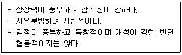
- 사회적(Social) 유형
- 예술적(Artistic) 유형
- 관습적(Conventional) 유형
- 탐구적(Investigative) 유형
- 현실적(Realistic) 유형
(정답률: 56%)
73. 다음 내용을 포함하는 MMPI-2의 Harris-Lingoes 소척도는?
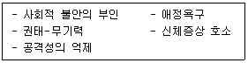
- Hy
- D
- PD
- SC
- Ma
(정답률: 33%)
74. 로샤 검사의 지각적 사고 지표(PTI)에 해당하지 않는 것은?
- XA%<.70이고 WDA%<.75
- X-%>.29
- LVL2>이고 FAB2>0
- M->1 혹은 X-%>.40
- 3r+(2)/R<.31 혹은 >.44
(정답률: 25%)
75. 허트(M. Hutt)의 BGT 평가항목 중 '형태의 일탈'에 해당하는 것은?
- 지각적 회전(perception rotation)
- 중첩 곤란(overlapping difficulty)
- 교차 곤란(crossing difficulty)
- 단편화(fragmentation)
- 보속성(perseveration)
(정답률: 29%)
4과목: 상담이론
76. 상담의 정의에 관한 설명으로 옳지 않은 것은?
- 상담자, 내담자, 상담관계가 주요 요소이다.
- 상담자는 상담에 대한 전문적 훈련을 받은 사람이다.
- 내담자는 자발적인 신청자로 제한한다.
- 상담은 내담자의 문제를 해결하도록 노력하는 것이다.
- 상담은 조력의 과정이다.
(정답률: 58%)
77. 인간중심 상담에 관한 설명으로 옳지 않은 것은?
- 구체적인 상담기법보다 상담자의 태도를 더 중요시한다.
- 인간은 자기실현경향성을 가지고 있는 존재이다.
- 철학적 배경은 실증주의이다.
- 로저스(C. Rogers)에 의해 창시된 상담이론이다.
- 비지시적 상담 또는 내담자중심 상담으로 불리어졌다.
(정답률: 54%)
78. 상담자의 역할 중 내담자를 돕는 직접적인 역할을 모두 고른 것은?
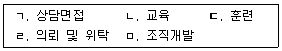
- ㄱ, ㄴ
- ㄴ, ㄷ
- ㄷ, ㄹ
- ㄱ, ㄴ, ㄷ
- ㄴ, ㄹ, ㅁ
(정답률: 40%)
79. 보기의 주요개념을 다루고 있는 상담이론으로 옳은 것은?
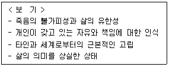
- 개인심리학
- 실존주의 상담
- 인간중심 상담
- 게슈탈트 상담
- 현실치료
(정답률: 50%)
80. 상담자의 자질에 해당하는 것을 모두 고른 것은?
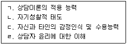
- ㄱ
- ㄴ, ㄷ
- ㄱ, ㄴ, ㄷ
- ㄴ, ㄷ, ㄹ
- ㄱ, ㄴ, ㄷ, ㄹ
(정답률: 57%)
81. 상담의 종결과정에서 다루어야 할 사항으로 옳지 않은 것은?
- 내담자와 비공식적인 수준에서 지속적인 상담관계를 계획한다.
- 내담자가 상담과정에서 무엇을 얻었는지 확인한다.
- 내담자와 상담종결에 대한 불안을 다룬다.
- 내담자가 사용했던 효과적인 대처행동을 검토한다.
- 내담자가 앞으로 사용할 수 있는 가용자원과 행동목록을 점검한다.
(정답률: 57%)
82. 상담구조화에 관한 설명으로 옳은 것을 모두 고른 것은?
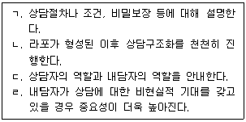
- ㄱ, ㄴ
- ㄷ, ㄹ
- ㄱ, ㄴ, ㄷ
- ㄱ, ㄷ, ㄹ
- ㄱ, ㄴ, ㄷ, ㄹ
(정답률: 45%)
83. 보기의 상담자가 사용한 상담기법으로 옳은 것은?
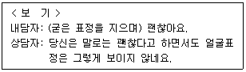
- 도전과 직면
- 질문과 탐색
- 이해와 공감
- 주의집중과 경청
- 패턴의 자각 및 수정
(정답률: 52%)
84. 보기에서 설명하고 있는 상담이론으로 옳은 것은?
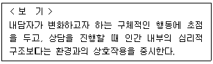
- 현실치료
- 행동주의 상담
- 교류분석 상담
- 정신분석 상담
- 게슈탈트 상담
(정답률: 45%)
85. 첫 회 상담에서 상담자가 수행해야 할 사항으로 옳지 않은 것은?
- 상담신청서 정보 확인
- 접수면접 정보 확인
- 라포 형성
- 상담구조화
- 사례개념화
(정답률: 53%)
86. 상담기술과 상담자 반응의 연결이 옳지 않은 것은?
- 감정반영 - 엄마한테 야단맞아서 많이 속상했겠다.
- 해석 - 친구에 관해 이야기를 나누기 전에 엄마한테 야단맞은 일에 대해서 좀 더 대화를 해보자.
- 즉시성 - 네가 엄마 이야기를 하면서 나의 눈치를 자꾸 보는 것 같아 안쓰럽게 느껴진다.
- 구체화 - 엄마한테 무슨 일 때문에 야단맞았니?
- 자기개방 - 나도 고등학교 다닐 때 엄마한테 야단을 많이 맞았어.
(정답률: 55%)
87. 정신분석 상담기법으로 옳은 것을 모두 고른 것은?
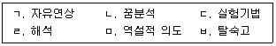
- ㄱ, ㄴ
- ㄷ, ㄹ
- ㄱ, ㄴ, ㄹ
- ㄷ, ㅁ, ㅂ
- ㄱ, ㄴ, ㄹ, ㅂ
(정답률: 47%)
88. 사례에 해당하는 A의 인지적 오류로 옳은 것은?
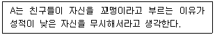
- 이분법적 사고
- 파국화
- 의미축소
- 잘못된 명명
- 임의적 추론
(정답률: 53%)
89. 합리정서행동치료(REBT)에 관한 설명으로 옳은 것을 모두 고른 것은?
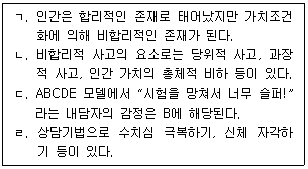
- ㄱ
- ㄴ
- ㄱ, ㄴ
- ㄷ, ㄹ
- ㄱ, ㄴ, ㄷ, ㄹ
(정답률: 26%)
90. 보기에 해당하는 방어기제로 옳은 것은?
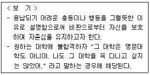
- 부인
- 합리화
- 치환
- 투사
- 억압
(정답률: 55%)
91. 다음의 인간관에 기초한 상담이론으로 옳은 것은?
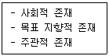
- 개인심리학
- 정신분석 상담
- 실존주의 상담
- 인간중심 상담
- 행동주의 상담
(정답률: 44%)
92. 게슈탈트 상담에 관한 설명으로 옳지 않은 것은?
- 내파층은 개체가 게슈탈트를 해소하고 완결 짓는 단계이다.
- 알아차림과 접촉 주기는 배경, 감각, 알아차림, 에너지 동원, 행동, 접촉의 순으로 이루어진다.
- 완결되지 못했거나 해소되지 않은 게슈탈트를 미해결 과제라고 한다.
- 게슈탈트 상담의 목적은 알아차림과 접촉을 증진시키는 것이다.
- 언어수정 기법을 통해 “나는 ~할 수 없다”를 “나는 ~하지 않겠다”로 바꾼다.
(정답률: 38%)
93. 엘리스(A. Ellis)가 제시한 합리적 사고와 비합리적 사고의 변별 기준으로 옳은 것을 모두 고른 것은?
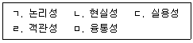
- ㄱ, ㄴ, ㄷ
- ㄱ, ㄹ, ㅁ
- ㄴ, ㄷ, ㄹ
- ㄱ, ㄴ, ㄷ, ㅁ
- ㄱ, ㄷ, ㄹ, ㅁ
(정답률: 29%)
94. 게슈탈트 상담에서 접촉경계 장애와 그 예시가 옳은 것은?
- 내사 - 부모님이 이혼하신 지 한 달이 지났지만 힘들지는 않아요. 통계자료를 봐도 이혼 가정 청소년들이 모두 힘든 것은 아니잖아요.
- 투사 - 엄마는 제가 어려서부터 변호사가 되길 원하셨어요. 저는 변호사 이외에 다른 직업을 생각해 본 적이 없어요.
- 반전 - 아빠가 술을 드시고 제게 화를 내시면 저는 자해를 하곤 했어요.
- 융합 - 제가 원하는 것을 엄마가 해 주지 않을 때 정말 화가 나요. 엄마는 자기중심적이세요.
- 편향 - 제가 원하는 대로 진로를 결정한다면 엄마가 실망하실 거예요. 저는 엄마를 실망시켜드리고 싶지 않아요.
(정답률: 46%)
95. 상담자가 사용하고 있는 개인심리학의 상담 기법으로 옳은 것은?
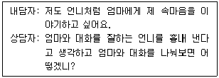
- 격려하기
- 자기 포착하기
- 스프에 침 뱉기
- 단추 누르기 기법
- 마치 ~인 것처럼 행동하기
(정답률: 55%)
96. 사례에서 상담자가 사용한 해결중심 상담의 질문기법으로 옳은 것은?
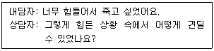
- 예외 질문
- 기적 질문
- 대처 질문
- 척도 질문
- 관계성 질문
(정답률: 39%)
97. 현실치료에 관한 설명으로 옳은 것은?
- 기본 욕구에는 사랑과 소속, 힘과 성취, 자유, 즐거움, 자아실현의 욕구가 있다.
- 개인이 경험하는 현실세계는 감각체계와 직관체계를 거친다.
- 전행동에는 활동하기, 생각하기, 관계하기의 세 가지 요소가 있다.
- 3R에는 책임, 현실, 옳고 그름이 있다.
- WDEP에서 W는 바람, D는 행동, E는 평가, P는 내담자를 의미한다.
(정답률: 31%)
98. 교류분석 상담에 해당하는 개념으로 옳은 것을 모두 고른 것은?
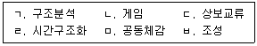
- ㄱ, ㄴ, ㄷ
- ㄷ, ㄹ, ㅂ
- ㄹ, ㅁ, ㅂ
- ㄱ, ㄴ, ㄷ, ㄹ
- ㄴ, ㄹ, ㅁ, ㅂ
(정답률: 31%)
99. 여성주의 상담에 관한 설명으로 옳지 않은 것은?
- 차별적이고 가해적인 사회제도를 변화시키는 것은 여성주의 상담목표를 벗어난다.
- 밀러(J. Miller)의 관계 모형에서 여성은 타인과 연결되어 있다고 느낄 때 존재 가치를 인정받는 것으로 지각한다.
- 내담자의 문제는 개인적 특성에 의해서라기보다 사회ㆍ정치적 환경에 의해 더 잘 유발된다.
- 여성주의 상담은 성에 대한 도식, 관계의 중요성, 다중 정체성 등을 다룬다.
- 성(性)차이는 선천적이라기보다 사회화에 의한 것이다.
(정답률: 41%)
100. 보기에 적용된 상담기법을 활용할 때 유의사항으로 옳지 않은 것은?
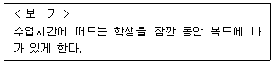
- 수업이 이루어지고 있는 교실에 학생이 좋아하는 요인이 있어야 한다.
- 격리되어 있는 장소에 강화자극이 없어야 한다.
- 복도에 나가 있는 시간은 5분 정도로 한다.
- 벌을 사용할 때의 일반적인 주의사항을 고려하여 적용한다.
- 수업에 참여하는 것 자체를 싫어하는 학생에게 적용하는 것이 적절하다.
(정답률: 55%)